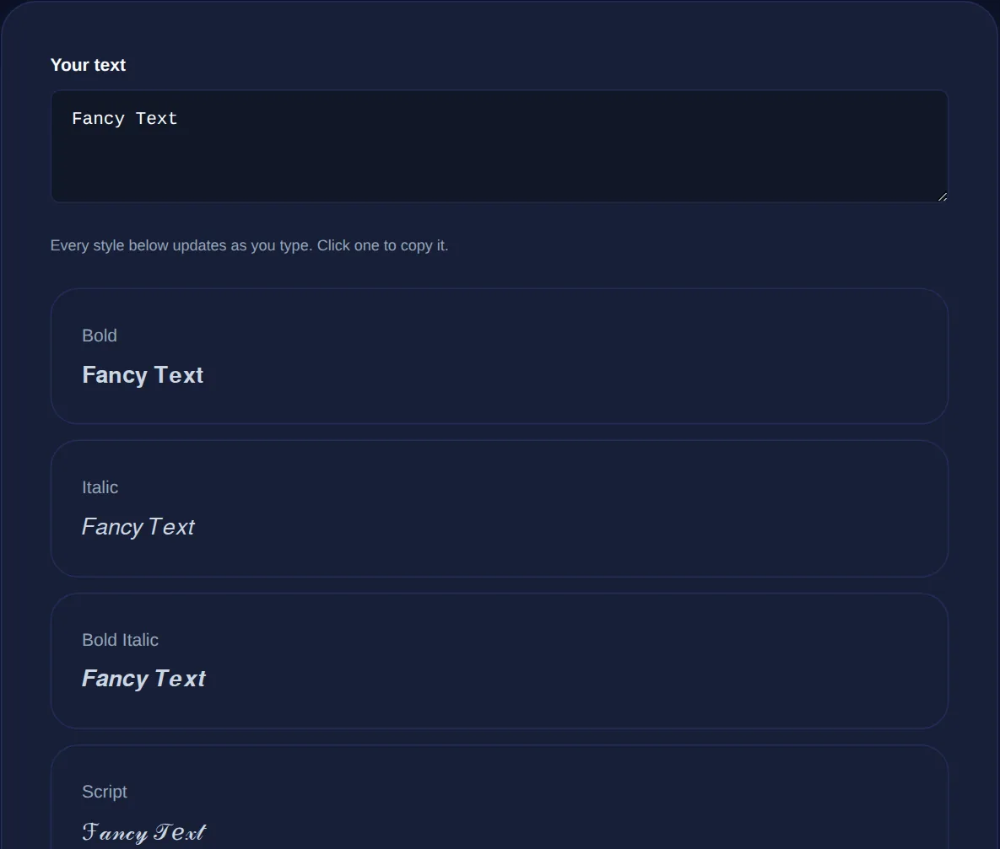

Fancy Text Generator: How Unicode Fonts Actually Work
Why the bold and script text people paste into bios is not a font at all, how it survives copy and paste, and when you should and should not use it.
By Mubasher Hussain · Published 2026-09-10 · Updated 2026-09-01 · 1089 words · about 5 minute read
You have seen it everywhere: bold usernames, cursive bios, upside-down comments, bubble letters in a chat. It looks like someone changed the font, but they did not, because there is no way to change the font in a plain text box. What they actually pasted were different characters that happen to look like styled letters. This guide explains what fancy text really is, why it survives copy and paste when normal formatting does not, and when you should avoid it. You can try every style with the free Fancy Text Generator, which runs entirely in your browser.
Fancy text is characters, not a font
A font is a set of drawings for the same underlying letters: switch from Arial to Times and the letter A is still the character A, just drawn differently. Formatting like bold works the same way, it is an instruction attached to ordinary letters, and that instruction lives in the document, not in the letters themselves. That is exactly why bold vanishes when you paste into a plain text field like an Instagram bio or a game name: the field keeps the characters and throws the instruction away.
Fancy text sidesteps this by not using formatting at all. Instead of taking the letter A and asking for it to be drawn bold, it swaps in an entirely different character that was designed to look like a bold A. That character carries its bold appearance with it, because the style is baked into the character rather than added on top.

Where these characters come from
The characters live in Unicode, the universal catalogue that assigns a number to every character across every writing system. Alongside the everyday alphabet, Unicode includes a block called Mathematical Alphanumeric Symbols, created so mathematicians could write a bold vector or a script variable and have it mean something precise. It contains complete bold, italic, script, fraktur, double-struck and monospace alphabets as real, distinct characters. Fancy text generators borrow these mathematical letters for decoration, along with other ranges such as circled letters, fullwidth characters and small capitals.
So when you copy a script-looking name, you are not copying a style, you are copying a string of mathematical script characters that already look that way. This is why it pastes cleanly into almost any box: to the computer it is just text, no different from plain letters.
| Style | The word Hello becomes | Source range |
|---|---|---|
| Bold | 𝐇𝐞𝐥𝐥𝐨 | Math bold |
| Italic | 𝐻𝑒𝑙𝑙𝑜 | Math italic |
| Script | ℋℯ𝓁𝓁ℴ | Math script |
| Monospace | 𝙷𝚎𝚕𝚕𝚘 | Math monospace |
| Small caps | Hᴇʟʟᴏ | Phonetic + Latin |
Why some letters fall back to plain
You may notice that a style occasionally leaves one letter looking normal. That is not a bug, it is a gap in Unicode. Some of these decorative ranges were added for a specific purpose and never included every character. The script range, for example, borrows a few letters from an older part of Unicode and is missing others, and no block covers accented letters or non-English scripts. When a styled version of a character does not exist, a good generator simply leaves the original in place rather than inventing something, so a rare letter or an emoji stays plain while the rest of your text transforms.
Type once and see dozens of Unicode styles update live: bold, italic, script, fraktur, monospace, bubble, squared, upside down and more. Click any one to copy it.
How upside-down and strikethrough differ
Two popular effects work slightly differently from the rest. Upside-down text maps each letter to a different character that looks like its flipped version, an a becomes an inverted a, and then reverses the whole string so it reads right to left, which is how it appears to turn your sentence on its head. Strikethrough and underline use a third trick called combining characters: an invisible mark that attaches to the character before it and draws a line through or under it. Because the line is a separate combining character riding along with each letter, the effect survives copy and paste just like the others.
When to use fancy text, and when not to
Fancy text is perfect for decoration: a standout username, a one-line bio, a playful comment, a section break in a profile. Used sparingly it adds personality to places that otherwise allow no styling at all. The problems start when it is used for anything that needs to be read, searched or understood by software rather than admired by a person.
Screen readers announce these characters by their Unicode names, so a bold script name can be read aloud as a string of mathematical symbols rather than your actual words. Search engines and site search boxes also treat them as different characters, so fancy text is effectively invisible to search. Keep it out of anything you want found or heard clearly.
The practical rule: use fancy text for flourish, never for substance. A decorative heading is fine. A whole paragraph, a call to action, a link people need to act on, or anything a screen reader user relies on should stay in ordinary letters.
Common questions
Will fancy text work on Instagram, TikTok and in games? Usually yes, because these are real characters rather than formatting, so they paste into most bios, usernames and captions. A few platforms filter certain ranges, so if one style does not appear, try another. Why does it sometimes show empty boxes? That means the device or app has no glyph for a character in that range and cannot draw it; a different, more widely supported style like bold or monospace usually renders everywhere. Is it bad for SEO? For anything you want indexed, yes, avoid it, since search engines do not equate a mathematical bold H with a normal H. Is my text private? Yes, the conversion runs entirely in your browser and nothing you type is uploaded.
Fancy text is one of those tricks that feels like magic until you see the mechanism: it is not a font, it is a swap for lookalike Unicode characters, which is exactly why it pastes anywhere and exactly why it should stay decorative. Play with the styles in the Fancy Text Generator, and when you need to inspect the plain character codes behind any text, the Text to ASCII tool shows them directly.